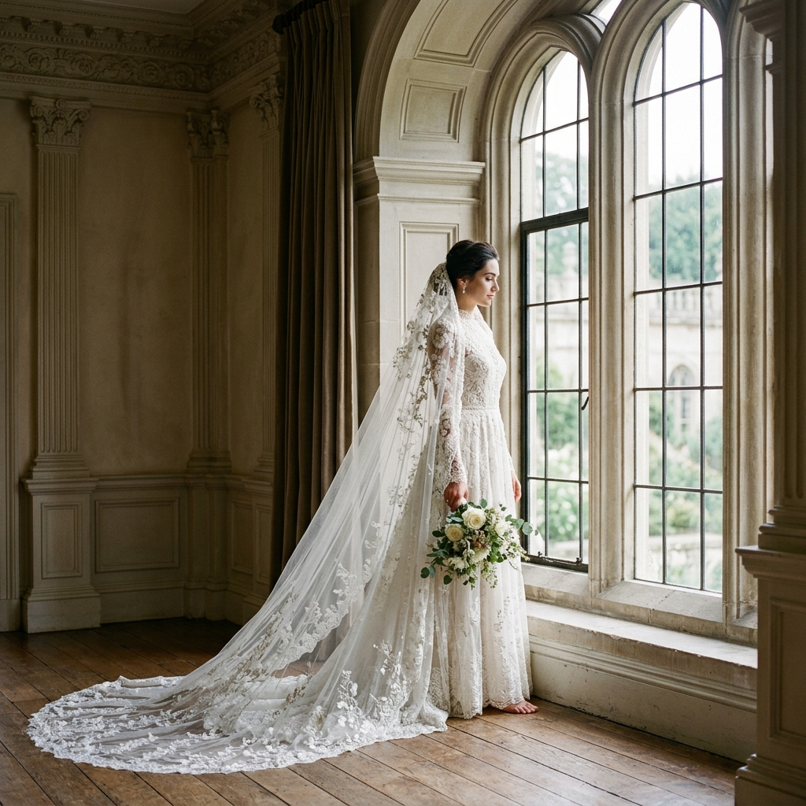
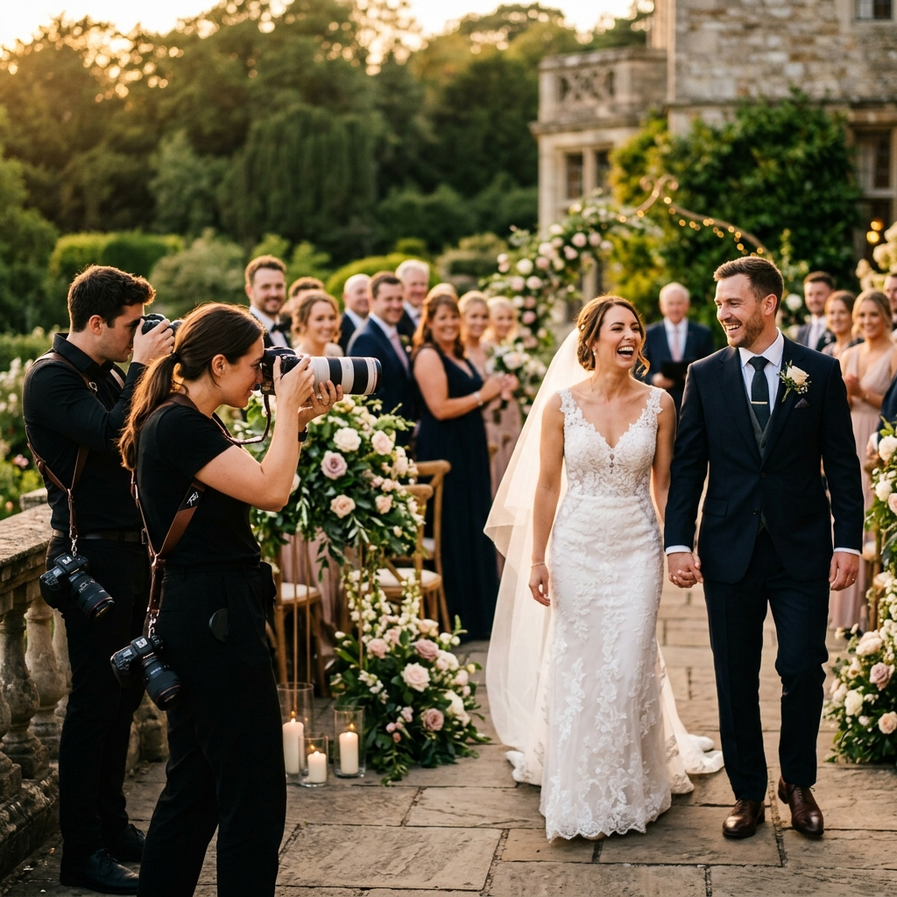
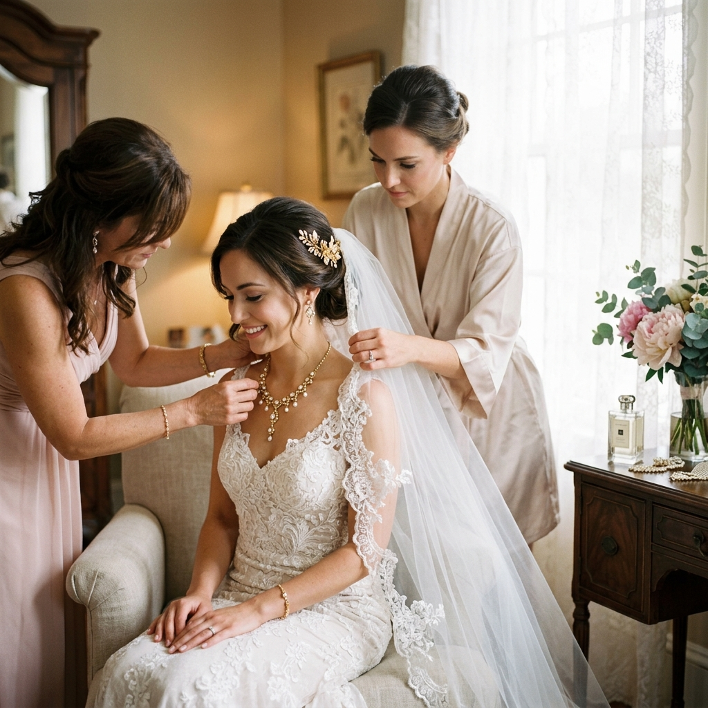
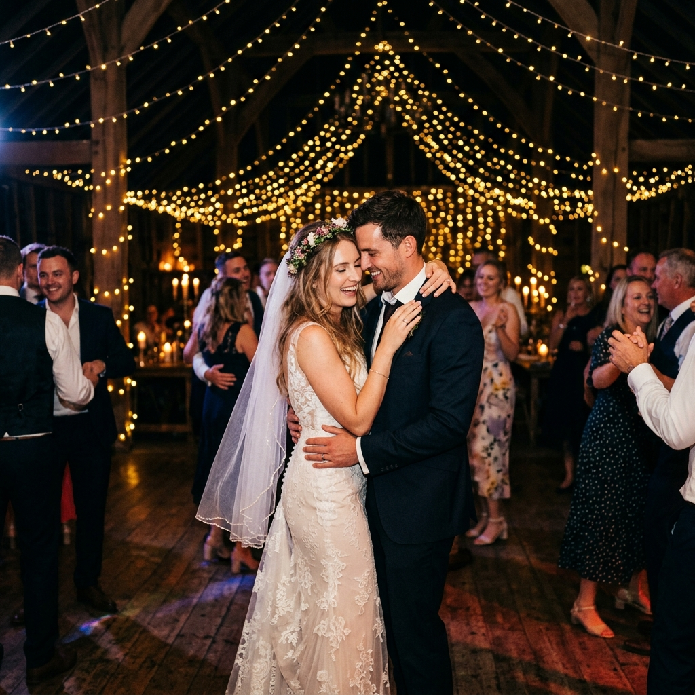
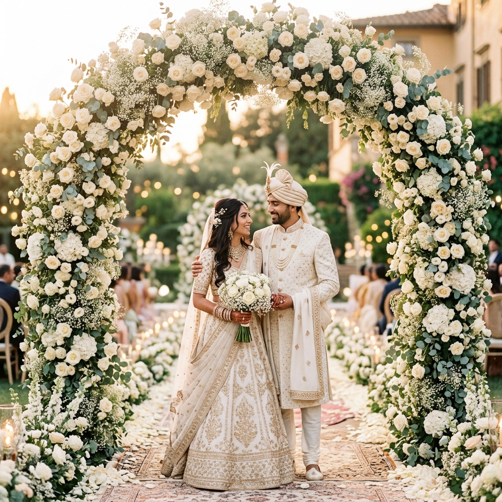
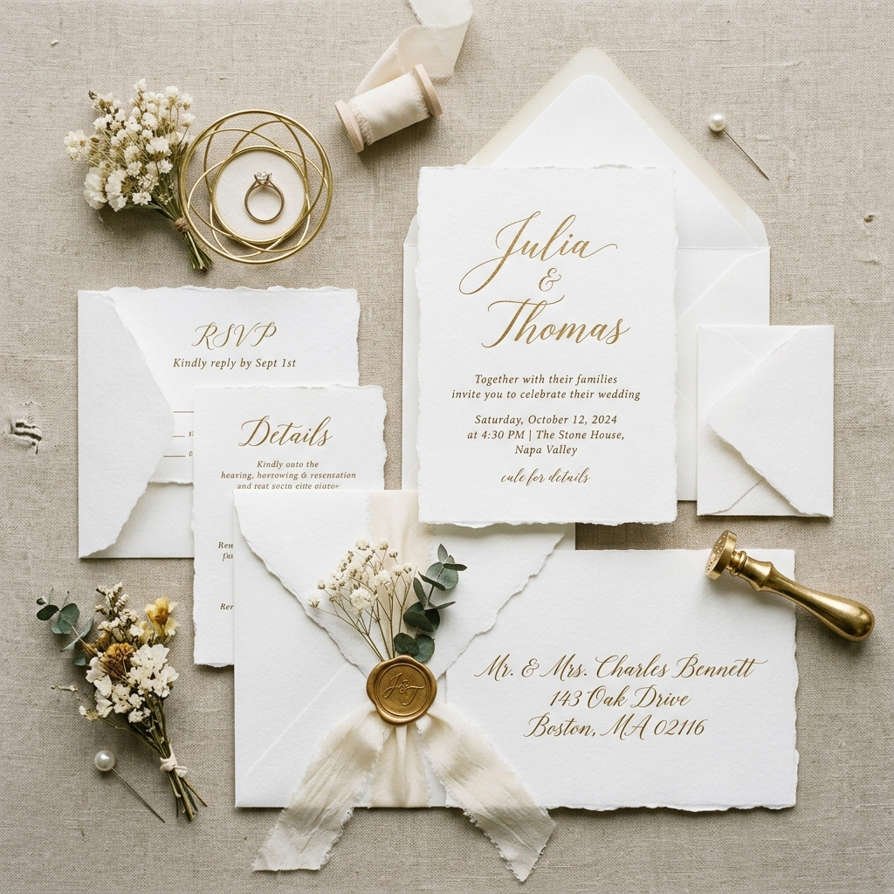

After documenting over 850 weddings across India, we have learned that the most beautiful photographs are rarely forced. They emerge from trust, preparation, family emotion, cultural rhythm, and the quiet awareness to notice what is happening before it disappears.
Step behind the camera and see how our team prepares, coordinates, and captures the real rhythm of a wedding day.
These stories reveal the planning, patience, lighting decisions, and quiet problem-solving that shape every polished final gallery.
A closer look at the planning, patience, and creative decisions behind our wedding stories.
From timeline preparation to emotional candid moments, every detail matters.
This featured story shares what years of real weddings have taught our team.

From pre-dawn preparation shotsto the final sparkler exit, thisstory explains how our team plansgear, coverage, timelines, andstays calm all day.
Read More
Wedding preparation photographyis an intimate art. We use softdirection, minimal interruption,and careful light while preservingmorning emotion.
Read More
Reception photography after darkis technically demanding. Lightingplacement, camera settings, lenschoice, and anticipation createwarm cinematic images.
Read MorePractical advice for couples planning their wedding photography, built from 12 years of timelines, venues, cultural ceremonies, family portraits, and real wedding-day problem solving.

Choosing the right photographeris one of the most importantplanning decisions. These questionsreveal experience, backups, editing,delivery, and pressure handling.
Read More
The hour before sunset createswarm, flattering light for portraitsand candids. We explain timing,travel buffers, and couple sessionsto make the most of it.
Read More
A strong timeline gives yourphotographer the light, breathingroom, and access needed formeaningful images that work forfamilies, planners, and artists.
Read MoreThe right venue sets the stage for extraordinary photography. Discover how palaces, gardens, beaches, and ballrooms influence light, movement, decor, guest flow, and final image style.
Great wedding photography doesn't end when the shutter clicks. The editing process is where images are transformed into art — with careful colour grading, retouching, and finishing that preserves the warmth and emotion of the moment.
We use professional-grade software and spend an average of 15 minutes per image to ensure each photograph meets our exacting standards of beauty and storytelling.
Every gallery is reviewed for color consistency, skin tone accuracy, and emotional flow before delivery. This careful process helps the final collection feel polished, cohesive, and true to the atmosphere of the wedding day.


Get monthly wedding photography tips, timeline guidance, behind-the-scenes stories, venue inspiration, and planning ideas delivered to your inbox before your big day.